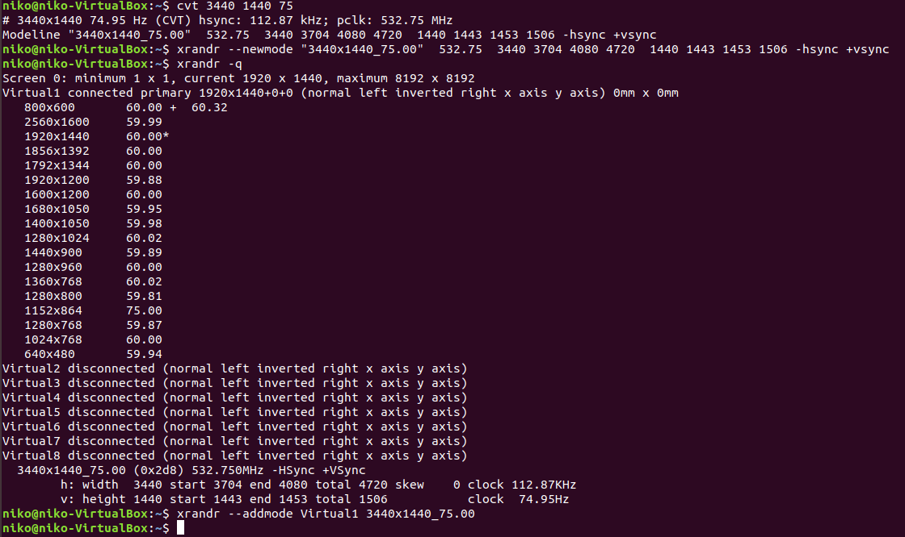
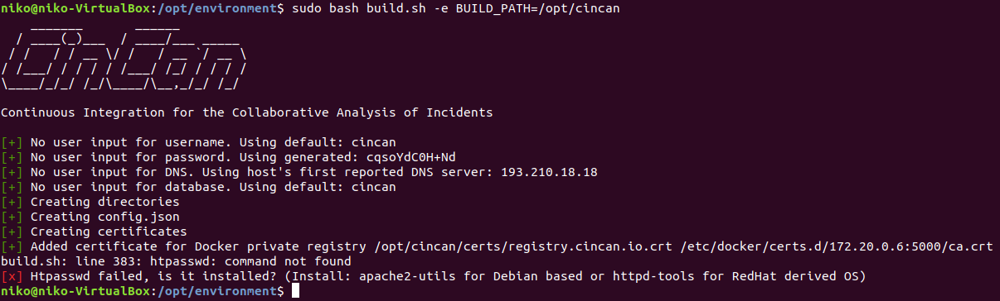
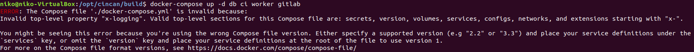
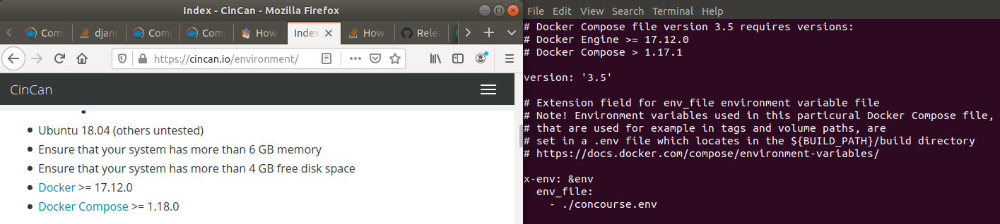
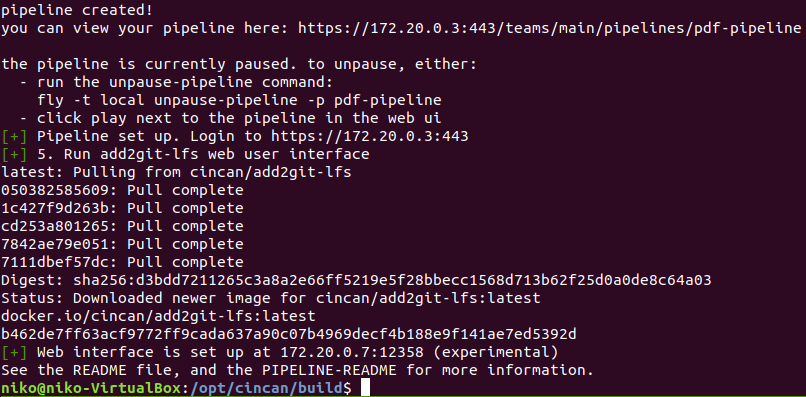
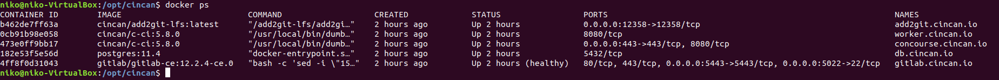
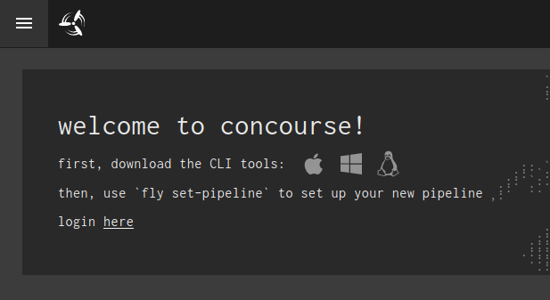
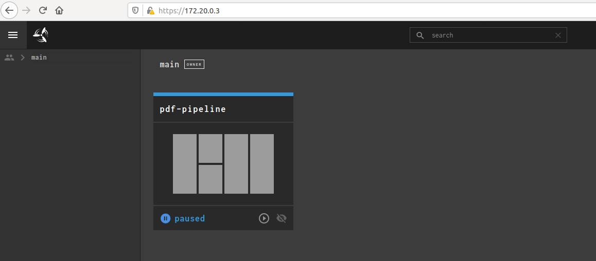
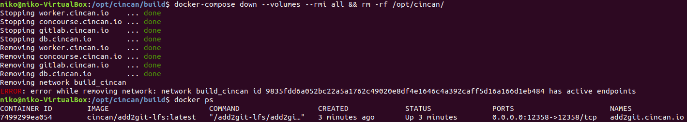

This is a report for the penetration testing cource taught by Tero Karvinen
CinCan
I decided to try setting up CinCan in advance and used a fresh Ubuntu 18.04 for it. Since its a fresh install there is a few things to do first. I started my fixing the display resolution using a few commands seen in the image.

After that i started by doing the usual sudo apt update and upgrade to make sure everything is up to date. I also installed vim and tmux then ran “echo 'set -g default-terminal "screen-256color"' > ~/.tmux.conf” to set tmux to use some nice colors. I installed docker and docker-compose but had to re-install those later. I used "git clone" to clone the repository as instructed. Navigating the environment directory i ran "sudo bash build.sh -e BUILD_PATH=/opt/cincan" but this gave me an error and required apache2-utils. I simply used apt to install those and tried again.

Going into /opt/cincan/build and trying to run the docker compose command it gave another error. After some troubleshooting i figured out that the required version of docker-compose is 1.18.0+ despite the README file saying that version 1.17.1 is required (which i had). I went to the docker-compose github page and chose to use version 1.25.4
Docker-Compose Versions >
I used these commands to install it (after removing the old version using “sudp apt remove docker-compose”).
curl -L https://github.com/docker/compose/releases/download/1.25.4/docker-compose-`uname -s`-`uname -m` -o /usr/local/bin/docker-compose
chmod +x /usr/local/bin/docker-compose
 
After fixing the issues with docker compose doing the docker compose command gave some error saying that docker is runnung in an unexpected location. I had been trying to fix if earlier so i might have broken something so i just re-installed it by following the steps on dockers site after which the docker compose command ran as expected.
 
Navigating to https://172.20.0.3 i got to the concourse page. Took me a while to figure out the credentials but i eventually looked at the README file properly and found the credentails to log in with.
 
Actually closing everything down also gave me some error but this is probably enough initial testing for now.

H4
We had a CinCan workshop that i am going to be reporting here. The workshop ended up being pretty messy and im writing this from memory so i hope ill manage to make something out of this. We started by simply installin cincan-command using pip with “pip3 install cincan-command --user” and “export PATH=$PATH:$HOME/.local/bin”. I did have some issues with running cincan with sudo so i had to run “sudo bash” and export the path again to be able to work in the /opt directory. From there i started with the Phishing task. Looking in the folder and reading the readme file the goal was to determine which emails are malicious, capture the visual look of these emails, figure out what these emails were trying to do and investigate this further. I started by using eml_parser to decode the eml files and pieped the output to python that made it into something more readable. The command i used to do this is “cincan run cincan/eml_parser mail.eml | python -m json.tool > output.txt”. Looking at the emails called Paymentfailed.eml and new_payment.eml i noticed that “kingphish22@mail.net” was acting to be a WebShop and someone called bob. In the first mail this person sent a zip file containing a pdf file with some bill with presumably the senders bank account number to steal Larrys money. I extracted this zip file by running “cincan run cincan/eml_parser:latest-stable -e zip new_payment.eml” . Looking at the second email kingphish22 sent (which oddly enough was sent 5 years later) i noticed that this time he has sent the email to himself but adding matti as a tetriary recipient in the bcc field which as far as i know could mean that the message could be sent to thousands of other people without matti actually knowing it. This email also contained a link to an online banking site which was asking not only for the username and password but also for credit card number, cvv and epiration date which makes it a pretty obvious scam. Looking at the email from Adam Smith whose email makes it seem like he is a spy or something but it seems like the just likes goats a bit too much and has gotten his emails classified as spam. I did also check the metadata of the image using exiftool but didnt find anything interesting. The next email is from raimo who is acting like his name is bob. This email is congratulating larry and it contains a doc file. Opening this doc file in libre office and navigating to the edit macros i found that it contain malicious looking encoded powershell script so it seems this one was malicious aswell. The last one is an email from a bank saying that Heikkis online banking is in danger. Looking at the link included in the email it seems the website is nearly the same that kingphish22 was using but this one wasnt asking for credit card number, cvv or the expiry date so it is safe to assume this is the real online banking site that kingphish copied for his scam.
To try cincan on some other samples i downloaded some spam mail from my email to look at. I chose an email that was sent supposedly from bentley and used eml parser to look at the data. Looking at the header it was obviously not sent form bentley but form aliya4@mukaasedmv.com. The email itself was saying that i have been invited to join something and a link to click. This link is obviously malicious so i opened it in a VM that i dont use to login to anything. Opening this link just redirects to some scetchy cash grabbing dating site so its safe to assume this spam mail is just trying to get people to create users on the site.
Cincan seems like an interesting tool so far but it is hard to say at this point what i could realistically use it for. I do really like that just trying to use a tool pulls the image if you dont already have it so you wont be in a situation where you try to use a tool only to realize that you dont have it, go install it and only then actually use it. Also running these tools in a docker container seems great to ensure that these tools work whatever machine you are running them on. Seems like cincan would be a great solution for incident response but since i dont really have experience in that field its hard to really experience all the value it has to offer but im sure ill see it more clearly in the future and maybe this is a good time to look into practising more incident response type of stuff while using this tool. If i would have to recommend this to someone i think it would be to someone who actually uses these tools already and is looking for a better solution. I guess all cincan really needs from my perspective is more tools and making sure that all the tools have properly explained usage with the --help command.